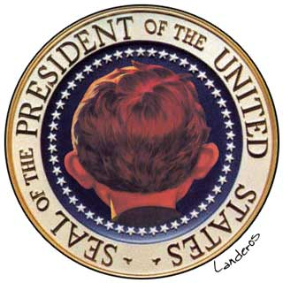

|

The W stands for "Wrong-Way"
Why can't our leader start off in the right direction more often than not? Is he simply mislead?
- - - - - - - - - -
by Rob Landeros
 EORGE W. BUSH has taken many early policy stances and actions that have later proved to be wrong-headed and sometimes disastrous. In most of these instances, incredibly, the Teflon Boy King has avoided paying any significant political price. EORGE W. BUSH has taken many early policy stances and actions that have later proved to be wrong-headed and sometimes disastrous. In most of these instances, incredibly, the Teflon Boy King has avoided paying any significant political price.
The following list is ongoing and will be updated periodically.
- The Homeland Security Department, a Democratic idea that Bush opposed for a year before finally coopting the idea for himself and the Republican party.
- The 9/11 Commission which he also opposed for a year until forced to adopt due to pressure from the victims' families, at which time he appointed a chairman with a penchant for secrecy and a history of international crimes against humanity.
- Nation building which he was dead-set against but which is now an integral part of the new Bush doctrine.
- Privatization of Social Security, one of his key policies entering office that now, following the tanking economy and the corporate and Wall Street scandals, his entire party is denying they knew anything about.
- Missle Defense, his answer to Reagan's "Star Wars" program, an extravagantly costly and unworkable system, the concept and purpose of which was invalidated overnight by Osama bin Laden.
- Osama Bin Laden, who the president declared public enemy #1, wanted dead or alive. Since Tora Bora, it's been "Osama who?"
- Bush's tax cuts, exploiting unrealistic surplus projections as a flimsy excuse, they were ineffective as an economic stimulus and have plunged the US into deficits, discouraging foreign investment and slowing any economic recovery. To date he has not taken steps to correct the problem, but there are indications that he may finall target low and middle income for tax breaks... where they should have been in the first place.
- Economic policy. His Secretary of Treasury characterized the Enron collapse as an example of "the beauty of capitalism". He then resisted endorsing business and accounting reform measures until Worldcom, Anderson, et al, forced him to jump on the bandwagon, which he did rhetorically and halfheartedly. Recently he has replaced his entire economic team - a move that is generally considered an admission of failure of his economic policy thus far.
- Isolationism, best exemplified by his hands-off Middle East policy, has been shown to be naive, unrealistic and a damaging case of wishful thinking. He has been forced to engage in global affairs which ironically have dominated his attention and have become the hallmark of his presidency thus far.
- Unilateralism. He withdrew the US from the Kyoto Protocol, the Ballistic Missile Treaty and the International Courts. He initially sought to go it alone against Hussein in Iraq, but was forced by Powell, public opinion, moderates, and critics from both the left and the right to seek multilateral UN support. His capitulation was then hailed as a shrewd bit of statesmanship.
- Humility. During his presidential campaign, Bush promised he and his team would be humble in their governance and in their approach to foreign affairs. Actually this is a rare instance of a good initial idea. But it didn't take long before his administration proved instead to be supremely arrogant, imperialistic, bullying and power drunk.
- Global warming, the existence of which he denied. Last year, after much foot-dragging, he finally acknowledged its reality. His acceptance came begrudgingly when the National Academy of Sciences released a report that he himself had commissioned. His position is that there is nothing that can or will be done about dealing with the problem.
- Energy policy. His strategy, drafted with the help of his crony oil buddies, is to drill our way out of our energy dependency. While it's still too early to tell if that dogma will waver, the Saudi-sponsored attacks have made it crystal clear that we must overcome our addiction to Middle East oil and become energy independent with efficient fuel standards and alternate, renewable energy sources.
According to Mark Crispin Miller, Bush has "boasted that he knows what he believes, and that he never changes his position, or his mind..." So even there, he's changed his mind about changing his mind.
It is probable that George W. Bush is not a consciously malicious man. His heart is probably in the right place. The problem is that his mind does not match up to his strength of heart. Most sentient politicians know perfectly well the whys and wherefores of their political calculations and therefore can be held accountable. Harry Truman had a sign on his desk that read "The buck stops here". In the case of Bush, the buck stops somewhere at the base of his cerebral cortex. I've always suspected that he is easily influenced and manipulated by his more callous and calculating Machiavellian advisors. Karl Rove plays Richelieu to Bush's Louis - Iago to his Othello. I'm sure policy rationales, when explained to him by the reassuring father figure of Dick Cheney, all sound good and reasonable. But the underlying impetus behind nearly all Bush policy lies in winning short-term political gain, appeasing constituent ideologues or paying back campaign contributors. Correct policy, compassionate policy, ANY policy, is not really all that important in this White House. The accuracy of this statement is verified by Ron Suskind's excellent exposé of the startling decision-making dynamics within this particular West Wing.
Winston Churchill said, "Americans, having exhausted all possible alternatives, eventually do the right thing." I suppose that makes Bush a great American. But wouldn't it be much preferable to have a president that started off on the right course first rather than being forced back onto it later?

|